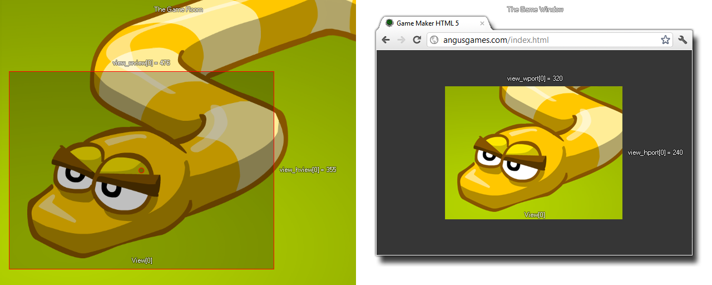

view_hport[0...7]
Returns: Real
This variable can be used to get or to set the height of the
specified viewport. The height of the viewport (or combined view
ports if more than one are active) define the height of the game
window or background canvas at the start of the game, but
changing this value after the game has started will have no visible
effect on the game window size. If you have a larger or smaller
port size than that assigned to the view, the view will be scaled
down or up to fit, as illustrated by the image below.

view_hview[0] = view_hport[0]; view_wview[0] = view_wport[0];
The above code sets the width and height of the view to be the same as the width and height of the view port.